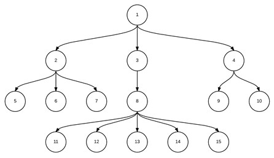

Recorridos en anchura
En el recorrido en anchura, o por niveles, se recorren todos los nodos del árbol por niveles, es decir, para un árbol de profundidad P, se hace:
- Desde i=0 hasta P
- Recorrer, de derecha a izquierda, el nivel i
Por lo tanto, el primer nodo que se recorre es la raíz, seguido por sus hijos de izquierda a derecha, seguidos por los hijos de éstos, también en ese orden, hasta completar todos los niveles.
Ejemplo - Si se listan los nodos siguiendo un recorrido por niveles del árbol de la figura 1 se obtiene:
- Listado: 1,2,3,4,5,6,7,8,9,10,11,12,13,14,15

Figura 1